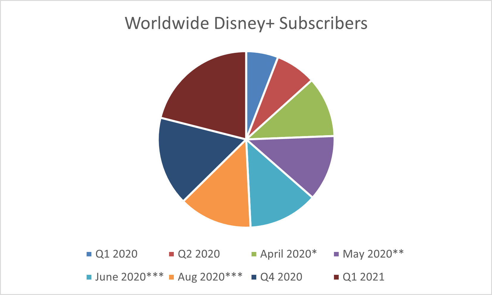

The Disney+ original series WandaVision is the streaming service's greatest show to date. WandaVision is a great show and I believe it is actively laying the foundation for the next phase of the MCU - phase 5. Since it's premeire on January 15, 2021 WandaVision has become one of the most watched shows ever, and is currently the most popular show in the world.
WandaVision broke records for Disney+ over its premiere weekend. According to Reelgood's data for January 15-17 it was the most watched shows across all streaming services garnering a 9.3% share of engagement. Prior to WandaVision, Disney's most in-demand show was the Mandalorian. As we can see from Nielsen's data (shown below and computed in the graphics) that WandaVision has surpassed the Mandalorian in its first weekend alone. It has been made clear from opening weekend that WandaVision is quickly becoming the most popular show in the world.
Additionally, WandaVision has made a huge impact on Disney+, bringing in more subscribers than previous quarters. As seen here, the largest chunk is from the first quarter progress of Disney+ subscribers (in millions) in 2021. From this we can infer that WandaVision has impacted this greatly given that it released only the second Friday in 2021 - January 15th. Prior to the release of WandaVision the average number of subscribers per quarter was 56.4mil and for Q1 of 2021 it was 94.9mil. We can see summary statistic this visualized in the pie chart to the side. The largest slice of this pie is representing the new subscribers since January 2021.
WandaVision is just barely edging out the Manadalorian as Disney+'s (and possibly all of streaming's) greatest feat. Previously the Manadalorian was the record-breaking hit show that wowed the world, but WandaVision is slowly taking over. Compared to the Mandalorian, WandaVision is holding up quite strongly.
WandaVision is currently the most popular show in the world. It's first weekend and continued viewership have raised the bar for streamable content. WandaVision could be Disney+'s biggest prospect yet, bringing in more subscriptions than any one Quarter in 2020, as represented in the featured pie chart. With this data I would confidently project WandaVision's continued global success as the world's most popular show up until - and possibly even after - its finale.